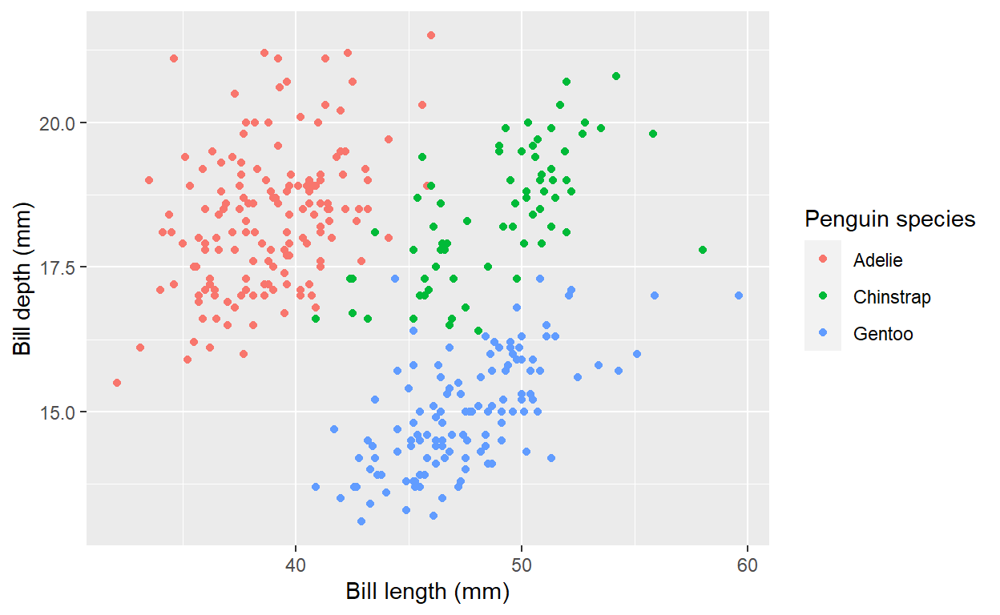

TL;DR
Variable labels can be quickly assigned in R, and can improve workflows via self-explaining, data dictionaries, and applications in summary tables, ggplot, and exporting.
Packages
This material was developed using:
| Software / package | Version |
|---|---|
| R | 4.2.0 |
| RStudio | 2022.07.1+554 |
tidyverse |
1.3.1 |
labelled |
2.9.1 |
sjlabelled |
1.2.0 |
gtsummary |
1.6.1 |
palmerpenguins |
0.1.0 |
ggeasy |
0.1.3 |
library(tidyverse) # general wrangling
library(labelled) # for general functions to work with labelled data
library(sjlabelled) # for example efc data set with variable labels
library(palmerpenguins) # example data set
library(gtsummary) # to demonstrate automatic use of variable labels in summary tables
library(ggeasy) # to use variable labels in ggplot
Introduction
I do believe in the idea of “Column Names as Contracts” as described by Emily Riederer. However, there exist situations in which one does not have control of column names, or in which column names are restricted to certain conventions incompatible with detailed column names. If this applies, a labelled data workflow may be useful.
A labelled data workflow is one in which readable variable labels are assigned to variables. Two reasons to adopt a labelled workflow are:
If you have obscure variable names that you do not wish to or cannot change, but from which programming would be easier if you could quickly glean meaning.
If you have readily understood variable names, but want something more descriptive or human readable for sharing data products like tables or figures.
I have previously written about Leveraging labelled data in R - this is from the perspective of importing SAS, SPSS, or Stata data into R that come with variable labels.
What about if you have data that do not arrive with variable labels? You can still assign variable labels in R, and it is a workflow I am adopting with increasing frequency.
Data with variable labels
As an example of what data with variable labels might look like in R,
check out the efc data set in the sjlabelled package.

Figure 1: Screenshot of view of efc data from the {sjlabelled} package in RStudio. Variable labels are printed underneath variable names.
Here, you an see the variable labels printed underneath variable
names. The first variable shown is c12hour - what is that?
Underneath the variable name, the variable label of
average number of hours of care per week provides
additional context without having to leave your data.
You can also see variable labels by examining the structure of the
data set. Labels are stored as attributes of the variables; note that
label refers the variable labels, whereas
labels refers to the value labels (not further discussed in
this post).
'data.frame': 908 obs. of 5 variables:
$ c12hour : num 16 148 70 168 168 16 161 110 28 40 ...
..- attr(*, "label")= chr "average number of hours of care per week"
$ e15relat: num 2 2 1 1 2 2 1 4 2 2 ...
..- attr(*, "label")= chr "relationship to elder"
..- attr(*, "labels")= Named num [1:8] 1 2 3 4 5 6 7 8
.. ..- attr(*, "names")= chr [1:8] "spouse/partner" "child" "sibling" "daughter or son -in-law" ...
$ e16sex : num 2 2 2 2 2 2 1 2 2 2 ...
..- attr(*, "label")= chr "elder's gender"
..- attr(*, "labels")= Named num [1:2] 1 2
.. ..- attr(*, "names")= chr [1:2] "male" "female"
$ e17age : num 83 88 82 67 84 85 74 87 79 83 ...
..- attr(*, "label")= chr "elder' age"
$ e42dep : num 3 3 3 4 4 4 4 4 4 4 ...
..- attr(*, "label")= chr "elder's dependency"
..- attr(*, "labels")= Named num [1:4] 1 2 3 4
.. ..- attr(*, "names")= chr [1:4] "independent" "slightly dependent" "moderately dependent" "severely dependent"Assign variable labels
What if your data do not come with variable labels? I imagine this
would be the case for the majority of users. If this applies to you, you
can assign variable labels via both manual and more automatic methods.
For demonstration, I’ll use the penguins data set from the
{palmerpenguins} package.
Manual
You can manually assign variable labels with
set_variable_labels() from the {labelled} package. The variable name is on the left
hand side and the variable label is on the right hand side.
penguins_labelled <- penguins |>
set_variable_labels(
species = "Penguin species",
island = "Island in Palmer Archipelago, Antarctica",
bill_length_mm = "Bill length (mm)",
bill_depth_mm = "Bill depth (mm)",
flipper_length_mm = "Flipper length (mm)",
body_mass_g = "Body mass (g)",
sex = "Penguin sex",
year = "Study year"
)
Confirm that the variable labels were correctly assigned via
View() or str().
# View(penguins_labelled)
str(penguins_labelled)
tibble [344 × 8] (S3: tbl_df/tbl/data.frame)
$ species : Factor w/ 3 levels "Adelie","Chinstrap",..: 1 1 1 1 1 1 1 1 1 1 ...
..- attr(*, "label")= chr "Penguin species"
$ island : Factor w/ 3 levels "Biscoe","Dream",..: 3 3 3 3 3 3 3 3 3 3 ...
..- attr(*, "label")= chr "Island in Palmer Archipelago, Antarctica"
$ bill_length_mm : num [1:344] 39.1 39.5 40.3 NA 36.7 39.3 38.9 39.2 34.1 42 ...
..- attr(*, "label")= chr "Bill length (mm)"
$ bill_depth_mm : num [1:344] 18.7 17.4 18 NA 19.3 20.6 17.8 19.6 18.1 20.2 ...
..- attr(*, "label")= chr "Bill depth (mm)"
$ flipper_length_mm: int [1:344] 181 186 195 NA 193 190 181 195 193 190 ...
..- attr(*, "label")= chr "Flipper length (mm)"
$ body_mass_g : int [1:344] 3750 3800 3250 NA 3450 3650 3625 4675 3475 4250 ...
..- attr(*, "label")= chr "Body mass (g)"
$ sex : Factor w/ 2 levels "female","male": 2 1 1 NA 1 2 1 2 NA NA ...
..- attr(*, "label")= chr "Penguin sex"
$ year : int [1:344] 2007 2007 2007 2007 2007 2007 2007 2007 2007 2007 ...
..- attr(*, "label")= chr "Study year"Automatic
If you have a lot of variables, the manual assignment could get
tedious. However, if you are lucky, your data may arrive with tables of
metadata. Suppose you could quickly import a data frame, with one column
for the variable names and another for variable labels. As we don’t have
an external metadata available for the penguins data, here
is an example data frame.
penguins_metadata <- tribble(
~variable, ~variable_label,
"species", "Penguin species",
"island", "Island in Palmer Archipelago, Antarctica",
"bill_length_mm", "Bill length (mm)",
"bill_depth_mm", "Bill depth (mm)",
"flipper_length_mm", "Flipper length (mm)",
"body_mass_g", "Body mass (g)",
"sex", "Penguin sex",
"year", "Study year"
)
penguins_metadata
# A tibble: 8 × 2
variable variable_label
<chr> <chr>
1 species Penguin species
2 island Island in Palmer Archipelago, Antarctica
3 bill_length_mm Bill length (mm)
4 bill_depth_mm Bill depth (mm)
5 flipper_length_mm Flipper length (mm)
6 body_mass_g Body mass (g)
7 sex Penguin sex
8 year Study year To quickly assign the variable labels, first create a named vector
via deframe() with values as the variable
labels and names as the variable names.
penguins_labels <- penguins_metadata |>
deframe()
penguins_labels
species
"Penguin species"
island
"Island in Palmer Archipelago, Antarctica"
bill_length_mm
"Bill length (mm)"
bill_depth_mm
"Bill depth (mm)"
flipper_length_mm
"Flipper length (mm)"
body_mass_g
"Body mass (g)"
sex
"Penguin sex"
year
"Study year" Now assign the labels using the splice operator. Using the splice operator, labels are assigned via matching against the variable name, which means that variable order does not matter.
penguins_labelled <- penguins |>
set_variable_labels(!!!penguins_labels)
Voilà! The variable labels have been assigned again.
# View(penguins_labelled)
str(penguins_labelled)
tibble [344 × 8] (S3: tbl_df/tbl/data.frame)
$ species : Factor w/ 3 levels "Adelie","Chinstrap",..: 1 1 1 1 1 1 1 1 1 1 ...
..- attr(*, "label")= chr "Penguin species"
$ island : Factor w/ 3 levels "Biscoe","Dream",..: 3 3 3 3 3 3 3 3 3 3 ...
..- attr(*, "label")= chr "Island in Palmer Archipelago, Antarctica"
$ bill_length_mm : num [1:344] 39.1 39.5 40.3 NA 36.7 39.3 38.9 39.2 34.1 42 ...
..- attr(*, "label")= chr "Bill length (mm)"
$ bill_depth_mm : num [1:344] 18.7 17.4 18 NA 19.3 20.6 17.8 19.6 18.1 20.2 ...
..- attr(*, "label")= chr "Bill depth (mm)"
$ flipper_length_mm: int [1:344] 181 186 195 NA 193 190 181 195 193 190 ...
..- attr(*, "label")= chr "Flipper length (mm)"
$ body_mass_g : int [1:344] 3750 3800 3250 NA 3450 3650 3625 4675 3475 4250 ...
..- attr(*, "label")= chr "Body mass (g)"
$ sex : Factor w/ 2 levels "female","male": 2 1 1 NA 1 2 1 2 NA NA ...
..- attr(*, "label")= chr "Penguin sex"
$ year : int [1:344] 2007 2007 2007 2007 2007 2007 2007 2007 2007 2007 ...
..- attr(*, "label")= chr "Study year"Uses
1. Self-explaining
Having your data accompanied by variable labels in your working environment, rather than having to switch to external documents to glean meaning, is empowering and speeds up workflows.
2. Create a data dictionary
You can quickly create a data dictionary with
labelled::generate_dictionary() to get an overview of your
metadata. It is convenient to search this within the RStudio data viewer
to find variables of interest.
penguins_dictionary <- penguins_labelled |>
generate_dictionary()
penguins_dictionary |>
knitr::kable()
| pos | variable | label | col_type | levels | value_labels |
|---|---|---|---|---|---|
| 1 | species | Penguin species | fct | Adelie , Chinstrap, Gentoo | NULL |
| 2 | island | Island in Palmer Archipelago, Antarctica | fct | Biscoe , Dream , Torgersen | NULL |
| 3 | bill_length_mm | Bill length (mm) | dbl | NULL | NULL |
| 4 | bill_depth_mm | Bill depth (mm) | dbl | NULL | NULL |
| 5 | flipper_length_mm | Flipper length (mm) | int | NULL | NULL |
| 6 | body_mass_g | Body mass (g) | int | NULL | NULL |
| 7 | sex | Penguin sex | fct | female, male | NULL |
| 8 | year | Study year | int | NULL | NULL |
For more fully fledged codebook options, check out Crystal Lewis’s codebook comparisons.
3. Variable labels in summary tables
If you want to create summary tables of your data, {gtsummary} handily uses the variable labels (if available), rather than variable names, to provide human readable and readily interpretable output.
penguins_labelled |>
select(island, species, bill_length_mm) |>
tbl_summary(
by = species
) |>
bold_labels()
| Characteristic | Adelie, N = 1521 | Chinstrap, N = 681 | Gentoo, N = 1241 |
|---|---|---|---|
| Island in Palmer Archipelago, Antarctica | |||
| Biscoe | 44 (29%) | 0 (0%) | 124 (100%) |
| Dream | 56 (37%) | 68 (100%) | 0 (0%) |
| Torgersen | 52 (34%) | 0 (0%) | 0 (0%) |
| Bill length (mm) | 38.8 (36.8, 40.8) | 49.5 (46.3, 51.1) | 47.3 (45.3, 49.5) |
| Unknown | 1 | 0 | 1 |
| 1 n (%); Median (IQR) | |||
4. Variable labels and {ggplot}
To substitute variable labels for variable names on your input
variables, add ggeasy::easy_labs() to your ggplot.
penguins_labelled |>
ggplot(aes(x = bill_length_mm, y = bill_depth_mm, color = species)) +
geom_point() +
ggeasy::easy_labs()

5. Exporting data with variable labels
For work, we have an in-development public facing package {croquet},
which contains a single frequently used function:
add_labelled_sheet(). This function exports data to excel
with row one as variable names, and row two as the descriptive variable
labels with filters automatically applied.
# devtools::install_github("pcctc/croquet")
library(croquet)
library(openxlsx)
wb <- createWorkbook()
add_labelled_sheet(penguins_labelled)
saveWorkbook(wb, "penguins_labelled.xlsx")

Figure 2: Screenshot of excel output from
croquet::add_labelled_sheet()
Exporting data with labels on row two feels unnatural as the data is no longer tidy, but it helps to quickly communicate variable meaning to collaborators comfortable with excel.
Final thoughts
I enjoy a labelled data workflow. It both enhances my productivity and streamlines my data products. I am curious if the set up is worthwhile for others as well! And please let me know if you have other labelled data applications or workflows not included here.
Acknowledgments
Thanks to Scott Stewart for sharing the {ggeasy} solution for ggplots on
Twitter, which is much better than what I had originally
written!
Lefkios Paikousis’s blog post “A workflow with labelled data” presents other ggplot labeling tips for value labels.